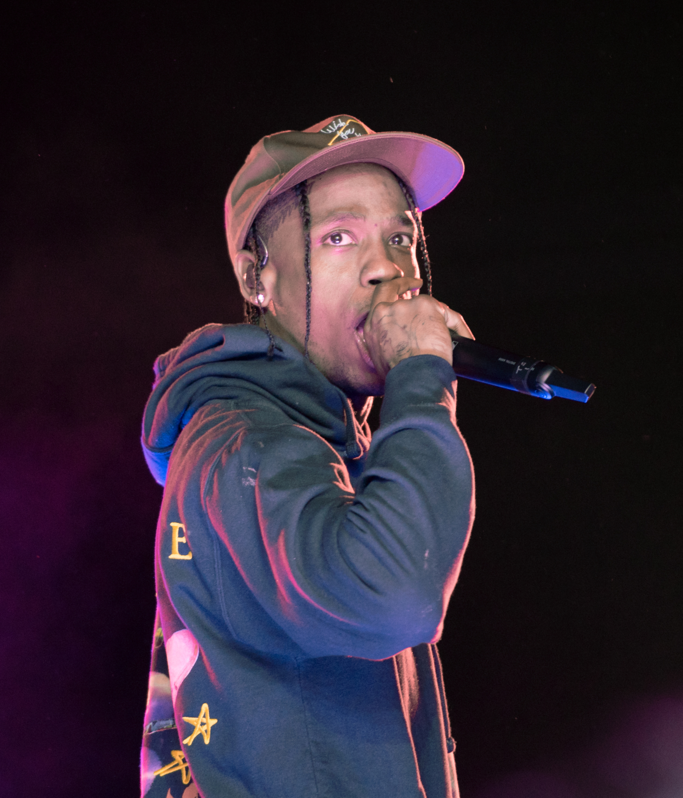

Travis Scott
Travis Scott came from Houston, Texas and became known for his creative approach to modern rap. His music combines trap production, strong melodies, and a psychedelic sound. He is also recognized for his intense live performances, which make his concerts feel like a major event. I enjoy his music because his songs create a powerful atmosphere and bring a lot of energy to a festival.